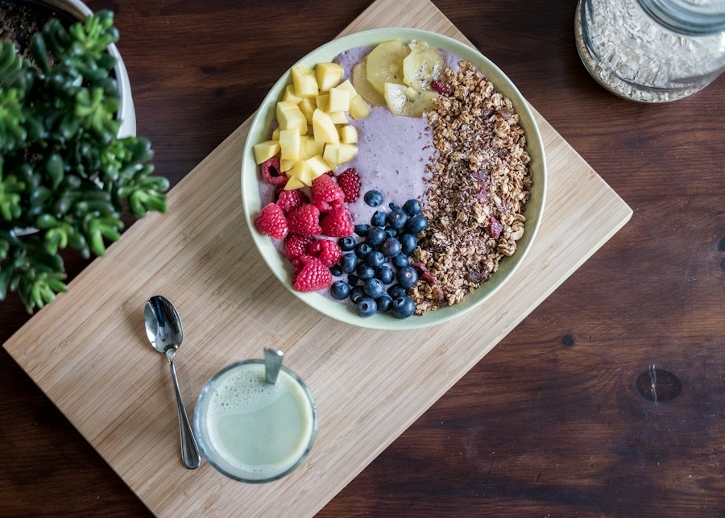
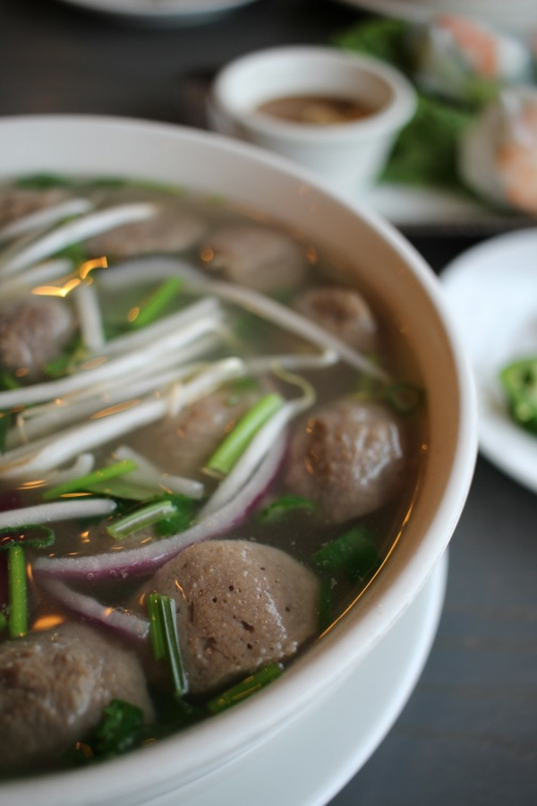
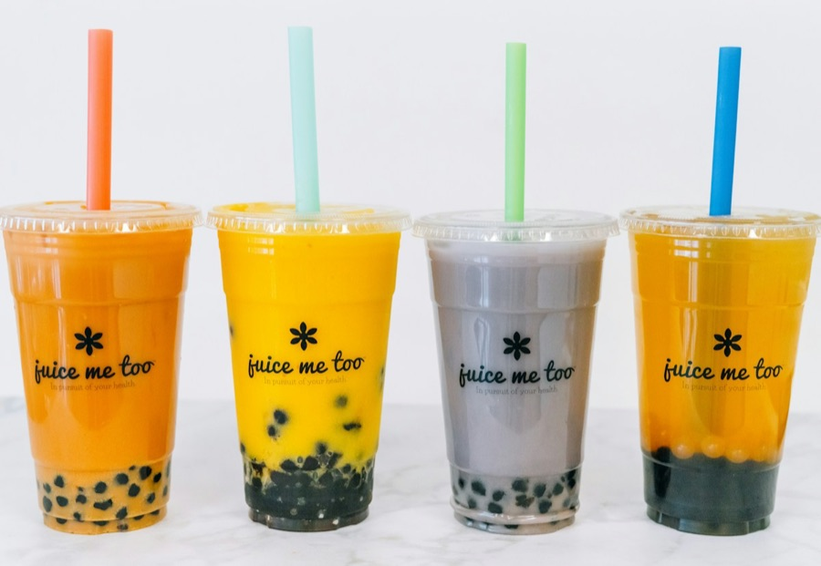

Pembeli online tidak bisa memegang atau mencicipi produkmu. Yang mereka lihat hanya foto. Hari ini kita belajar memotret produk dengan HP, lalu memakai AI supaya hasilnya terlihat profesional — tetap jujur!
Foto adalah "mata" pembeli online — foto yang jelas membuat orang percaya.
Cahaya, latar, lensa, grid, jarak, dan fokus — dicoba langsung di Studio Mini.
Belajar Rumus Prompt 5 Bagian dan memakai Bank Prompt yang siap disalin.
Tahu batas: mana editan yang boleh, mana yang sudah menipu pembeli.
Dua foto di bawah memotret es boba yang sama persis. Pilih satu, lalu jelaskan alasanmu!
Foto asli: Unsplash. Foto A adalah foto yang sama, sengaja dibuat gelap, kekuningan, dan miring.
Analogi etalase: toko kue dengan etalase kaca yang bersih dan terang membuat orang mampir. Etalase yang gelap dan berdebu membuat orang lewat saja. Di internet, fotomu adalah etalasenya.
Kabar baiknya: HP biasa sudah cukup! Kuncinya ada di cara memotret, bukan harga kamera.
Tebak dulu caranya, baru klik kartunya untuk membuka jawabannya!
Lampu kamar, flash, atau jendela?
klik untuk membukaFoto di dekat jendela pada siang hari. Cahayanya lembut dan warnanya alami. Hindari sinar matahari langsung dan matikan flash.
Taruh produk ±1 meter dari jendela.
Apa yang ada di belakang produkmu?
klik untuk membukaSingkirkan barang lain. Pakai kertas karton putih, kain polos, atau papan kayu sebagai alas dan latar.
Karton ditekuk seperti huruf L = studio mini!
Kenapa foto bisa terlihat berkabut?
klik untuk membukaLensa HP sering kena sidik jari. Lap dengan kain halus sebelum memotret supaya foto tajam, tidak buram.
Butuh 3 detik, hasilnya langsung beda.
Garis-garis apa di layar kamera?
klik untuk membukaAktifkan garis grid di pengaturan kamera. Garis membantu foto lurus dan produk berada di tengah atau di titik pertemuan garis.
Pengaturan kamera → Grid / Garis bantu.
Mau produk terlihat besar, caranya?
klik untuk membukaZoom dengan dua jari membuat foto pecah dan buram. Lebih baik dekatkan HP ke produk.
Kakimu adalah tombol zoom terbaik!
Fotonya kegelapan atau kurang tajam?
klik untuk membukaKetuk produk di layar supaya kamera fokus ke sana. Lalu geser ikon matahari ke atas/bawah untuk mengatur terang-gelap.
Tahan HP dengan dua tangan agar tidak goyang.
Pilih cahaya, latar, dan sudut. Bisakah kelasmu mencapai Nilai Foto 100?
Tanyakan: bagian mana dari produkku yang paling menarik? Arahkan HP ke bagian itu.

HP lurus menghadap ke bawah. Cocok untuk produk yang isinya terlihat dari atas.

Seperti posisi mata saat makan. Atas dan samping produk sama-sama terlihat.

HP setinggi produk. Pas untuk produk yang tinggi atau punya bentuk samping yang khas.
Foto: Unsplash. Perhatikan: dari atas, isi mangkuk terlihat semua · miring 45°, bakso dan kuahnya terlihat · sejajar, lapisan boba di dasar gelas terlihat jelas.
Buka foto di galeri → tekan Edit. Cukup 4 langkah ini:
Buang bagian yang tidak perlu. Pilih ukuran persegi (1:1) untuk toko online dan Instagram.
Geser Kecerahan / Exposure pelan-pelan sampai produk terlihat jelas.
Supaya produk "keluar" dari latar. Sedikit saja, jangan sampai terlalu gelap.
Bandingkan dengan produk aslinya di depanmu. Warnanya harus sama!
Edit membuat foto lebih jelas — bukan membuat produk terlihat berbeda dari aslinya.
AI bisa menggambar dari nol atau merapikan foto asli. Bagi pembeli, artinya sangat berbeda.
Foto utama nasi kotak Bu Ratih di toko online.
Jalan B. Pembeli akan menerima nasi kotak itu, jadi fotonya harus foto asli.Gambar latar suasana pantai untuk poster "Promo Liburan". Foto boba asli ditempel di atasnya.
Jalan A boleh. Pantainya hanya hiasan, produknya tetap foto asli. Jangan lupa label "ilustrasi".Foto menu bakso untuk aplikasi pesan antar makanan.
Jalan B. Pembeli memesan berdasarkan foto menu, jadi bakso di foto harus sama dengan yang diantar.Geser untuk membandingkan. Simulasi penyempurnaan cahaya pada foto yang sama (foto: Unsplash).
Pakai 6 jurus: cahaya jendela, latar polos, lensa bersih, grid, mendekat, ketuk fokus.
Minta AI merapikan, bukan mengganti produknya.
Perbaiki cahaya foto ini agar terang dan warnanya alami. Jangan ubah bentuk, warna, dan isi gelas boba.Taruh produknya di samping layar. Warna, bentuk, dan isinya harus sama. Kalau berbeda, ulangi atau pakai foto aslinya.
Nama produk, harga, dan ajakan ditulis sendiri supaya ejaannya benar.
Prompt adalah perintah yang kita ketik untuk AI. Makin jelas perintahnya, makin bagus hasilnya — seperti memberi pesanan ke tukang foto.
Mau AI melakukan apa? Ubah latar, perbaiki cahaya...
Sebut nama produknya dengan jelas.
Di mana produknya diletakkan? Warna apa?
Terang lembut? Gaya katalog? Ukuran 1:1?
Larangan: jangan ubah bentuk, warna, isi produk.
Unggah foto asli produkmu ke aplikasi AI, tempel prompt, lalu ganti bagian yang berwarna kuning.
Ingat pertanyaan kuncinya: apakah pembeli akan menerima barang yang sama dengan fotonya?
Kerjakan berkelompok atau di rumah. Pakai produk usaha kelompokmu, atau barang/makanan yang ada di rumah.
Dekat jendela, siang hari, karton polos sebagai alas dan latar. Lap lensa HP.
Dari atas, miring 45°, dan sejajar. Pilih satu yang paling menarik.
Potong 1:1, terang dan kontras sedikit. Pastikan warnanya masih asli.
Pilih prompt dari Bank Prompt. Tempel foto sebelum dan sesudah bersebelahan, lalu tulis 1 alasan kenapa hasilnya lebih baik.
Jurus foto mana yang paling mengubah hasil fotomu? Kenapa?
Sebutkan 5 bagian Rumus Prompt tanpa melihat catatan!
Menurutmu, kapan memakai AI pada foto jualan menjadi tidak jujur?
AI membantu fotomu tampil rapi — tapi produk aslimu tetap bintangnya. Sampai jumpa, fotografer muda!